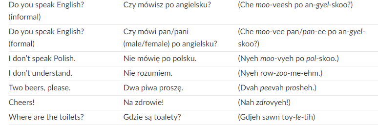
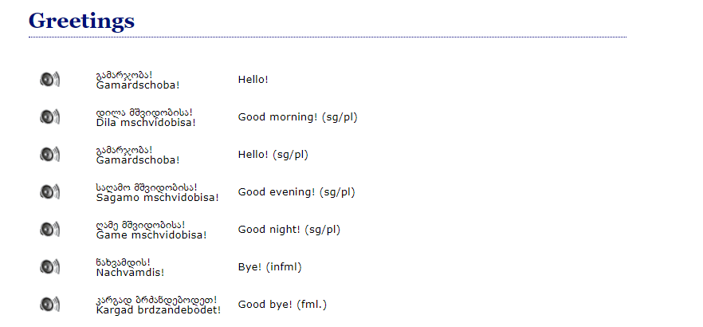
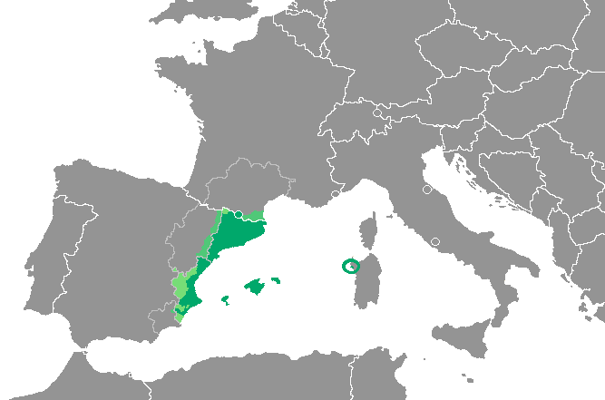

Linguistics 200
Day 13: Phonotactics
Review
Last Time: Consonant System
Outpost’s Consonant System
| Bilabial | Interdental | Alveolar | Retroflex | Palatal | Velar | Uvular | Glottal | |
|---|---|---|---|---|---|---|---|---|
| Stop | p p’ | t t’ | k k’ | q q’ | ||||
| Nasal | m | n | ||||||
| Affricate | ʈʂ | |||||||
| Fricative | θ | s | ʂ ʐ | h | ||||
| Approximant | w | r l | j |
Last Time: Vowel System
Nairetha’s Vowel System (Reduced)
| Front | Central | Back | |
|---|---|---|---|
| High | i ĩ y | ɯ u ũ | |
| Mid | |||
| Low | a ã | ɒ |
For the Quiz:
- Episode 6 (Phonotactics)
- Have your vowel system complete
- Unsure of how to build it?
- Remember: you can bring your notebook!
For Monday:
- Composition (show model on Canvas)
Phonotactics
Review: With Group
- What is a syllable? How does a syllable compare to, say, a consonant?
- T/F: Japanese is unique in that it has restrictions on how their words and syllables are pronounced.
- Say out loud “Fneischel”. How can you tell this is not an English word?
- Consider the following words. Why do or don’t they seem like they could be English?
- Hraind
- Farp
- Txai
What is Phonotactics?
- Rules about how sounds in a language can be combined to form words and syllables
- Rules like:
- How many consonants can be grouped together?
- Can words end in a consonant?
- How many vowels can be pronounced side by side?
What is Phonotactics?
- Each language has its own phonotactics
| ✓ Occurs in English | ✗ Doesn’t Occur |
|---|---|
| /klV/ clay | /tlV/ *tlay |
| /glV/ glue | /dlV/ *dlay |
| /plV/ play | |
| /blV/ blue |
- /l/ can only follow some stops in English
Phonotactics: Syllables
Say each word while tapping on the table. How many syllables?
- apple [æpl̩]
- enough [ɪnʌf]
- nutrition [nutrɪʃən]
- activation [æktəveɪʃən]
- neurologist [nʊrɑlədʒɪst]
- probably [prɑbəbli]
- annihilation [ənaɪəleɪʃən]
- knowledge [nɑlɪdʒ]
- glimpse [ɡlɪmps]
- operational [ɑpəreɪʃənl̩]
What are syllables?
σ
- A sequence of sounds grouped around a nucleus (usually a vowel or vowel-like element)
- Sounds before the nucleus: the onset
- Sounds following: the coda
Phonotactics: Syllables
Divide each word into syllables. What is the nucleus of each syllable?
| Word | Transcription |
|---|---|
| apple | [æ.pl̩] |
| enough | [ɪ.nʌf] |
| nutrition | [nu.trɪ.ʃən] |
| activation | [æk.tə.veɪ.ʃən] |
| neurologist | [nʊ.rɑ.lə.dʒɪst] |
Phonotactics: Syllables
Nuclei
| Word | Transcription | Nucleus |
|---|---|---|
| apple | [æ.pl̩] | æ / ə or l̩ |
| enough | [ɪ.nʌf] | ɪ / ʌ |
| nutrition | [nu.trɪ.ʃən] | u / ɪ / ə |
| activation | [æk.tə.veɪ.ʃən] | æ / ə / eɪ / ə |
| neurologist | [nʊ.rɑ.lə.dʒɪst] | ʊ / ɑ / ə / ɪ |
Phonotactics: Syllables
What is the onset of each syllable?
| Word | Transcription |
|---|---|
| apple | [æ.pəl] or [æ.pl̩] |
| enough | [ɪ.nʌf] or [ə.nʌf] |
| nutrition | [nu.trɪ.ʃən] |
| activation | [æk.tə.veɪ.ʃən] |
| neurologist | [nʊ.rɑ.lə.dʒɪst] |
Phonotactics: Syllables
Onsets
| Word | Onset(s) |
|---|---|
| apple | nothing / p |
| enough | nothing / n |
| nutrition | n / tr / ʃ |
| activation | nothing / t / v / ʃ |
| neurologist | n / r / l / dʒ |
Phonotactics: Syllables
What is the coda of each syllable?
| Word | Transcription |
|---|---|
| apple | [æ.pl̩] |
| enough | [ɪ.nʌf] |
| nutrition | [nu.trɪ.ʃən] |
| activation | [æk.tə.veɪ.ʃən] |
| neurologist | [nʊ.rɑ.lə.dʒɪst] |
Phonotactics: Syllables
Codas
| Word | Coda(s) |
|---|---|
| apple | nothing / nothing |
| enough | nothing / f |
| nutrition | nothing / nothing / n |
| activation | k / nothing / nothing / n |
| neurologist | nothing / nothing / nothing / st |
Phonotactics: Syllables
So far we’ve seen these English syllable patterns:
V · CV · VC · CVC · CCV · CCVCC
- What other patterns can we have?
- Can we have VCC? CVCC? CCCVCCCC?
- V = vowel or vowel-like sound; C = consonant
Phonotactics: Syllables
Syllabify the following. What patterns do they show?
| Word | Transcription |
|---|---|
| ask | [æsk] |
| last | [læst] |
| strengths | [strɛŋkθs] |
Phonotactics: Syllables
English syllable structure: (C)₃V(C)₄
| No coda | +C | +CC | +CCC | +CCCC | |
|---|---|---|---|---|---|
| V | V | VC | VCC | VCCC | VCCCC |
| CV | CV | CVC | CVCC | CVCCC | CVCCCC |
| CCV | CCV | CCVC | CCVCC | CCVCCC | CCVCCCC |
| CCCV | CCCV | CCCVC | CCCVCC | CCCVCCC | CCCVCCCC |
Hawaiian
- https://hawaiian-words.com/common/
Hawaiian
- Akua
- Ala
- Alelo
- Ali‘i
- Aloha
- Aloha ’auinalā
- Aloha ’oe
- Aloha ahiahi
What is a Possible Hawaiian σ?
- Akua
- Ala
- Alelo
- Ali‘i
- Aloha
- Aloha ’auinalā
- Aloha ’oe
- Aloha ahiahi
Japanese
- https://www.transparent.com/learn-japanese/phrases.html
Japanese
Hai. Yes.
はい。
Iie. No.
いいえ。
O-negai shimasu. Please.
おねがいします。
Arigatō. Thank you.
ありがとう。
Dōitashimashite. You’re welcome.
どういたしまして。
Sumimasen. Excuse me.
すみません。
Gomennasai. I am sorry.
ごめんなさい。
Ohayō gozaimasu. Good morning.
おはようございます。
Konbanwa. Good evening.
こんばんは。
O-yasumi nasai. Good night.
おやすみなさい。
What is a Possible Japanese σ?
Hai. Yes.
はい。
Iie. No.
いいえ。
O-negai shimasu. Please.
おねがいします。
Arigatō. Thank you.
ありがとう。
Dōitashimashite. You’re welcome.
どういたしまして。
Sumimasen. Excuse me.
すみません。
Gomennasai. I am sorry.
ごめんなさい。
Ohayō gozaimasu. Good morning.
おはようございます。
Konbanwa. Good evening.
こんばんは。
O-yasumi nasai. Good night.
おやすみなさい。
Spanish
- https://www.rosettastone.com/spanish-words/
Spanish
- Buenos días / Good morning
- Buenas tardes / Good afternoon
- Buenas noches / Good evening
- Hola, me llamo Juan / Hello, my name is John
- Me llamo… / My name is…
- ¿Cómo te llamas? / What’s your name?
- Mucho gusto / Nice to meet you
- ¿Cómo estás? / How are you?
- Estoy bien, gracias / I’m well thank you
- Disculpa. ¿Dónde está el baño? / Excuse me. Where is the bathroom?
- ¿Qué hora es? / What time is it?
- ¿Cómo se dice ‘concert’ en español? / How do you say ‘concert’ in Spanish?
- Estoy perdido/a / I am lost
- Yo no comprendo / I do not understand
- Por favor, habla más despacio / Would you speak slower, please
- Te extraño / I miss you
- Te quiero / I love you
What is a Possible Spanish σ?
- Buenos días / Good morning
- Buenas tardes / Good afternoon
- Buenas noches / Good evening
- Hola, me llamo Juan / Hello, my name is John
- Me llamo… / My name is…
- ¿Cómo te llamas? / What’s your name?
- Mucho gusto / Nice to meet you
- ¿Cómo estás? / How are you?
- Estoy bien, gracias / I’m well thank you
- Disculpa. ¿Dónde está el baño? / Excuse me. Where is the bathroom?
- ¿Qué hora es? / What time is it?
- ¿Cómo se dice ‘concert’ en español? / How do you say ‘concert’ in Spanish?
- Estoy perdido/a / I am lost
- Yo no comprendo / I do not understand
- Por favor, habla más despacio / Would you speak slower, please
- Te extraño / I miss you
- Te quiero / I love you
Polish
- https://www.inyourpocket.com/warsaw/the-polish-language-co-za-bzdura_74022f
Polish

Polish

- CCRVs/L/N
Georgian
- https://www.17-minute-world-languages.com/en/georgian/
Georgian

Georgian

Georgian
- gvprtskvni “you peeled us (like a potato)”
Nuxalk
- https://en.wikipedia.org/wiki/Nuxalk_language
Nuxalk
- ps “to shape, mold; to blow, hiss”
- skwp “to moisten, spray water”
- sxs “fat, grease”
- sps “cold north-east wind”
- tlh “strong”
- tl’p “to pinch, snap, cut off”
- lhxwt “to spit on something”
- p’xwlht “bunchberry”
- clhp’xwlhtlhplhhskwts’ “then she/he had had in her/his possession a bunchberry plant”
Wait…Where Are the Vowels?
- Every syllable needs a nucleus — usually a vowel
- Nuxalk lets highly sonorant consonants (fricatives, nasals, liquids) fill that role instead
- Below, syllable breaks are marked with a dot (.); a small mark under a consonant means this one is the nucleus
Nasals and Liquids as Nuclei??
- bottom [ˈbɑ.ɾm̩]
- button [ˈbʌ.ʔn̩]
- butter [ˈbʌ.ɾɹ̩]
- bottle [ˈbɑ.ɾɫ̩]
Fricatives as Nuclei??!!??
- pssssst [ps̩t]
What is a Possible Nuxalk Syllable?
- [nu.jam.ɬ̩] “we used to sing”
- [s̩.pʰs̩] “northeast wind”
- [ɬ̩qʰ] “wet”
- [t̪ʼ̩ɬ̩.ɬ̩] “dry”
Activity
Catalan

What is a possible Catalan σ?
- flor [ˈfɫoɾ] “flower”
- tren [ˈtɾɛn] “train”
- blanc [ˈblaŋ(k)] “white”
- peix [ˈpeʃ] “fish”
- vuit [ˈvuit] “eight”
- cinc [ˈsiŋ] “five”
- camps [ˈkams] “fields”